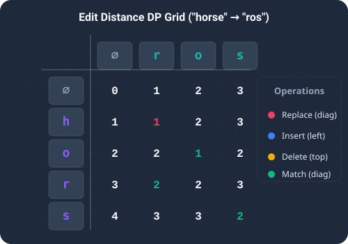

Measuring the similarity between two pieces of text is a foundational task in computer science. Whether it is matching query strings in search engines, correcting typos in word processors, aligning DNA sequences, or determining differences in code files via version control, we need a precise way to calculate string discrepancy. This discrepancy is measured using the Edit Distance (commonly known as the Levenshtein Distance). The problem asks us to compute the minimum number of single-character operations required to transform one string (word1) into another (word2).
We are permitted three basic operations to edit the string:
- Insert a single character
- Delete a single character
- Replace one character with another
horse to ros takes exactly three operations:
- Replace
hwithr(horse→rorse) - Delete the second
r(rorse→rose) - Delete the final
e(rose→ros)

To understand how edit distance works, think of a traditional typesetter arranging metal letters on a manual printing press. Suppose the typesetter wants to modify a word already set on the plate.
Each modification—picking up a new letter block (insertion), removing an existing letter block (deletion), or swapping one letter block for another (replacement)—takes effort and cost.
To find the cheapest way to transform a long word, the typesetter keeps a ledger. When aligning the letters of both words step-by-step:
- If the letters under inspection match perfectly, the typesetter pays nothing ($0) and copies the cost of the previous sub-alignment.
- If the letters mismatch, the typesetter compares three possibilities: replacing the letter (diagonal cell in the ledger), deleting the letter (cell above), or inserting a letter (cell to the left). They choose the cheapest option, add a cost of $1, and record it in the ledger.
Dynamic Programming Strategy
Since comparing all possible operations recursively leads to duplicate subproblems and exponential time complexity, we use 2D Dynamic Programming.
If the lengths of word1 and word2 are m and n respectively, we construct a 2D table dp of size (m + 1) × (n + 1). The cell dp[i][j] stores the minimum edit distance to transform the prefix word1[0..i-1] into the prefix word2[0..j-1].
- Base Cases:
- An empty source string requires
jinsertions to match a target string of lengthj(dp[0][j] = j). - A source string of length
irequiresideletions to match an empty target string (dp[i][0] = i).
- An empty source string requires
- State Transition:
- If the current characters match (
word1.charAt(i-1) == word2.charAt(j-1)), no new operation is needed:dp[i][j] = dp[i-1][j-1]. - If they mismatch, we find the minimum cost among replace, delete, and insert operations, and add 1:
dp[i][j] = 1 + Math.min(dp[i-1][j-1], Math.min(dp[i-1][j], dp[i][j-1]))
- If the current characters match (
dp[m][n] represents our final solution.
Step-by-Step Scenario Walkthrough
Let's trace the logic with the words "cat" and "cut":
- Initial Grid: The row 0 is initialized to
[0, 1, 2, 3]and column 0 is initialized to[0, 1, 2, 3]. - Aligning 'c' and 'c' (Cell 1,1): Since the characters match, we inherit the diagonal value:
dp[1][1] = dp[0][0] = 0. - Aligning 'ca' and 'cu' (Cell 2,2): Characters mismatch ('a' vs 'u'). We look at the adjacent values: replace (
dp[1][1] = 0), delete (dp[2][1] = 1), and insert (dp[1][2] = 1). The minimum is0. Adding1givesdp[2][2] = 1. - Aligning 'cat' and 'cut' (Cell 3,3): Characters match ('t' vs 't'). We inherit the diagonal value:
dp[3][3] = dp[2][2] = 1.
1, representing replacing a with u.
Key Code Explanations
Here is why the main logic in the solution is important:
dp[i][0] = i; dp[0][j] = j;: Correctly handles the boundary conditions where one of the input strings is empty, defining deletion and insertion baselines.word1.charAt(i - 1) == word2.charAt(j - 1): Checks if characters are identical. Matching letters require zero operations, allowing us to inherit the diagonal cost directly.Math.min(replace, Math.min(delete, insert)): The core choice. Computes the optimal subproblem path out of a replace, delete, or insert operation.
Java Implementation Code
Below is the complete, self-contained Java source code that solves this problem. It also includes a main method that traces the execution with console outputs.
package io.practise.dsa;
public class EditDistance {
// 2D Dynamic Programming: Time O(M * N), Space O(M * N)
public int minDistance(String word1, String word2) {
if (word1 == null || word2 == null) {
return 0;
}
int m = word1.length();
int n = word2.length();
int[][] dp = new int[m + 1][n + 1];
// Base Case: Convert word1[0..i] to empty word2
for (int i = 0; i <= m; i++) {
dp[i][0] = i;
}
// Base Case: Convert empty word1 to word2[0..j]
for (int j = 0; j <= n; j++) {
dp[0][j] = j;
}
// Fill the DP table
for (int i = 1; i <= m; i++) {
for (int j = 1; j <= n; j++) {
if (word1.charAt(i - 1) == word2.charAt(j - 1)) {
// Characters match, carry over diagonal value
dp[i][j] = dp[i - 1][j - 1];
} else {
// Choose minimum operation: Replace, Delete, or Insert
int replace = dp[i - 1][j - 1];
int delete = dp[i - 1][j];
int insert = dp[i][j - 1];
dp[i][j] = 1 + Math.min(replace, Math.min(delete, insert));
}
}
}
return dp[m][n];
}
public static void main(String[] args) {
EditDistance solver = new EditDistance();
String w1 = "horse";
String w2 = "ros";
System.out.println("--- Edit Distance Demonstration ---");
System.out.println("Source Word: " + w1);
System.out.println("Target Word: " + w2);
int distance = solver.minDistance(w1, w2);
System.out.println("Minimum Edit Distance (operations): " + distance); // Expected: 3
}
}Conclusion & Complexity Analysis
This dynamic programming solution executes in O(m * n) time complexity and uses O(m * n) space complexity. By storing subproblem solutions, we solve the edit distance problem efficiently, making it suitable for practical NLP and text comparison tasks.